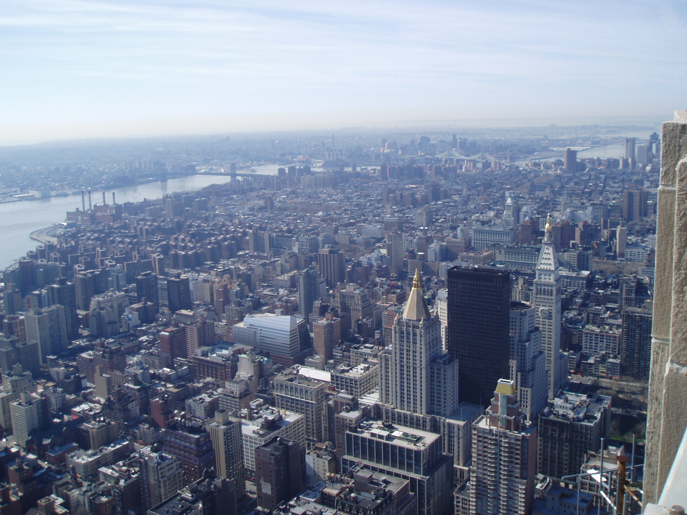

The thin tower with the clock is the
Metropolitan
Life Building (not to be confused with the MetLife Building)
next to the Madison Square
Park. Behind the black box, is a building that looks kind of like
it had it top chopped off. That's the
Metropolitan
Life North Building, which was originally intended to dwarf the
previously mentioned building. In front of the black box is
New York
Life Building.
